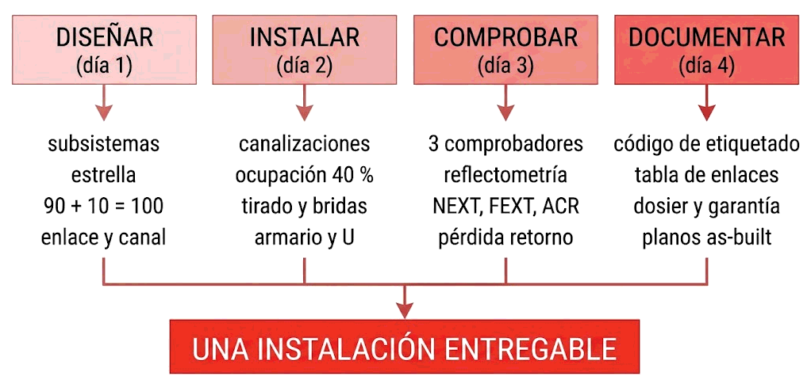

Contenido
1. El mapa de la semana

DISEÑAR INSTALAR COMPROBAR DOCUMENTAR
(día 1) (día 2) (día 3) (día 4)
│ │ │ │
subsistemas canalizaciones 3 comprobadores código de
estrella ocupación 40 % reflectometría etiquetado
90 + 10 = 100 tirado y bridas NEXT, FEXT, ACR tabla de enlaces
enlace y canal armario y U pérdida retorno dosier y garantía
└──────────────────┴───────────────────┴──────────────────┘
UNA INSTALACIÓN ENTREGABLECada paso deja huella en el siguiente: lo que se diseña mal se nota al instalar, lo que se instala mal aparece en la certificación, y lo que no se documenta se pierde. Por eso los cuatro días son el mismo trabajo visto en cuatro momentos.
2. Día 1 — Los subsistemas
| Concepto | Lo esencial |
|---|---|
| Independencia de la aplicación | Una infraestructura genérica para datos, voz y lo que venga. Dura 15-20 años; los equipos, 5 |
| Los seis subsistemas | Acometida · sala de equipos · vertical · cuarto de telecomunicaciones · horizontal · área de trabajo |
| El séptimo elemento | La administración: etiquetado y documentación, que no es un lugar sino una tarea |
| Topología | Estrella jerárquica, sin bucles, un solo nivel intermedio |
| Distancias | 90 m fijo + 10 m de latiguillos = 100 m |
| Regla del recorrido | Distancia en planta + 20 % y 3 m por cambio de altura |
| Enlace permanente | Solo la parte fija, 90 m, lo certifica el instalador, más exigente |
| Canal | Todo, con latiguillos, 100 m, menos exigente |
| Área de trabajo | Dos tomas por cada 10 m². Lo caro es el acceso, no el material |
3. Día 2 — Instalación física
| Concepto | Lo esencial |
|---|---|
| Canalizaciones | Canaleta · bandeja · tubo · suelo técnico. Todas deben permitir meter cable después |
| Ocupación | Máximo 40 % de la sección: (ancho × alto × 0,4) ÷ (π r²) |
| Tensión de tirado | 110 N, unos 11 kg. Más, y se abre el trenzado |
| Radio de curvatura | Al menos 4 veces el diámetro; en fibra, 25 mm |
| Bridas | Deben girar con la mano. Apretadas, deforman el cable |
| Separación eléctrica | Canalizaciones distintas o tabique; cruces en ángulo recto |
| Unidad de rack | 1 U = 44,45 mm; ancho 19 pulgadas; 42U ≈ 1,87 m |
| Reparto | Pesado abajo · panel y switch emparejados con pasahilos · 20-30 % libre · cuidar el aire |
| El armario necesita | Tierra, SAI, ventilación, cierre y espacio para trabajar |
4. Día 3 — Comprobación y certificación
| Concepto | Lo esencial |
|---|---|
| Qué se comprueba | Cableado correcto, categoría adecuada, conexiones sin deficiencias y ruido mínimo |
| Tres comprobadores | Continuidad · cableado (diafonía, atenuación, ruido) · TDR (localiza) |
| OTDR | El TDR de la fibra: atenuación del tramo y pérdidas en conectores |
| Reflectometría | El eco vuelve; del tiempo sale la distancia a la avería |
| Parámetros básicos | Continuidad · mapeado · resistencia · longitud. La longitud delata rollos escondidos |
| Atenuación | Tres causas: longitud excesiva, conectores mal montados, temperatura |
| Diafonía | Dos causas: no mantener el trenzado en los conectores, o pantalla deteriorada |
| NEXT y FEXT | Extremo cercano y extremo lejano. Los dos, altos |
| ELFEXT | Cálculo, no medida: atenuación menos FEXT. 12 medidas en 4 pares. Se desea bajo |
| ACR | NEXT menos atenuación. Alto. Falla si falla cualquiera de los dos |
| Pérdida por retorno | Por diferencias de impedancia: destrenzado alto o pantalla no mantenida |
| El informe | Se mira el margen, no solo el PASS |
5. Día 4 — Etiquetado y documentación
| Concepto | Lo esencial |
|---|---|
| El código | Único, jerárquico, estable y corto. Por ejemplo A-1-07 |
| Qué se etiqueta | La toma, no el usuario. El mismo ID en roseta, dos extremos del cable y puerto del panel |
| Las etiquetas | Impresas, duraderas, legibles sin desmontar, coherentes |
| Tabla de enlaces | ID, ubicación, armario, panel y puerto, categoría, longitud, certificación y uso |
| Planos | As-built, con tomas, recorridos y armarios |
| Dosier | Memoria · planos · tabla · certificaciones · inventario · garantías |
| Garantía del sistema | 20-25 años. Exige material homologado, instalador certificado, certificación y documentación |
| Mantenerla viva | Anotar cada cambio en el momento. Desactualizada es peor que ninguna |
6. Todas las cifras, juntas
| Dato | Valor | Día |
|---|---|---|
| Cableado horizontal fijo | 90 m | 1 |
| Latiguillos y enlace completo | 10 m · 100 m | 1 |
| Enlace permanente · canal | 90 m · 100 m | 1 |
| Regla del recorrido | +20 % y 3 m por cambio de altura | 1 |
| Tomas por área de trabajo | 2 por cada 10 m² | 1 |
| Ocupación de canalización | 40 % | 2 |
| Sección de un cable de 6 mm | 28,3 mm² | 2 |
| Tensión máxima de tirado | 110 N ≈ 11 kg | 2 |
| Radio de curvatura en cobre | ≥ 4 × diámetro | 2 |
| Unidad de rack · ancho | 44,45 mm · 19 pulgadas | 2 |
| Armario de 42U | ≈ 1,87 m | 2 |
| Espacio libre recomendado en armario | 20-30 % | 2 |
| Medidas de ELFEXT en 4 pares | 12 | 3 |
| Documentos del dosier | 6 | 4 |
| Duración de la garantía del sistema | 20-25 años | 4 |
7. Y el mes entero, en una página
Antes del examen mensual, el recorrido completo del Mes 2:
| Semana | La pregunta que responde | Lo que hay que llevarse |
|---|---|---|
| 5 · Conceptos de transmisión | ¿Por qué un medio tiene velocidad máxima? | Fourier y los armónicos · ancho de banda en Hz frente a bps · codificación y modulación · Nyquist y Shannon |
| 6 · Medios cableados | ¿De qué está hecho cada cable y cuál pongo? | Par trenzado y apantallamientos · montaje y par partido · coaxial · fibra y presupuesto óptico · las tablas 3.5 y 3.6 |
| 7 · Medios inalámbricos | ¿Y si no hay cable? | λ = c/f · las cuatro propiedades · microondas y satélite con su retardo · canales Wi-Fi y 1-6-11 · cable o aire |
| 8 · Cableado estructurado | ¿Cómo se cablea un edificio entero? | Subsistemas y 90 + 10 · canalizaciones y armarios · certificación y sus parámetros · documentación |
Empezó con una pregunta de física —por qué un cable tiene un límite— y termina con un dosier de entrega. En medio, siempre la misma lógica: el medio impone un límite, la ingeniería lo aprovecha y el oficio decide si el resultado se acerca o no a ese límite. Un cable Cat 6 mal montado rinde peor que un Cat 5e bien instalado, y eso resume el mes.
8. Flashcards de toda la semana
Veinticuatro tarjetas, seis por día.
Test semanal — Semana 8
24 preguntas · 40 minutos · cinco por día más cuatro de integración
Al corregir verás el desglose por día. Después de este test toca el examen mensual.
Resultados
Respuestas correctas: 0 / 0
Respuestas incorrectas: 0
Cubre las cuatro semanas del Mes 2. Empieza con el repaso de los fallos del mes, sigue con 22 preguntas tipo test y termina con 4 ejercicios prácticos. Cuenta 50 % y 50 %.
→ Ir al examen mensual del Mes 2 (105 min)
Mes 3 — Capa de Enlace y Ethernet. Se sube un piso en la pila: de cómo viajan los bits por el medio a cómo se agrupan en tramas, con direcciones MAC, control de acceso al medio y el funcionamiento interno de Ethernet.